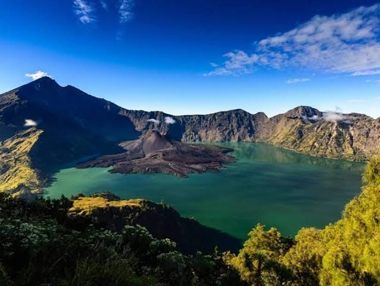

Beranda
Beranda
Selamat datang di website Jelajah Wisata Indonesia. Website ini berisi informasi mengenai beberapa tempat wisata menarik yang ada di Indonesia.
JELAJAH WISATA INDONESIATemukan Keindahan Alam Dan Budaya Indonesia |
| Beranda | Wisata | Galeri |
 Gunung Bromo Gunung Bromo adalah gunung berapi aktif di Jawa Timur dengan ketinggian 2.614 meter di atas permukaan laut yang terletak di dalam kawasan Taman Nasional Bromo Tengger Semeru |
 Gunung Rinjani Gunung Rinjani adalah gunung berapi aktif setinggi 3.726 meter di atas permukaan laut yang terletak di Pulau Lombok, Nusa Tenggara Barat |
 Raja Ampat Raja Ampat adalah gugusan kepulauan indah di Provinsi Papua Barat Daya |
 Destinasi Wisata
Destinasi Wisata